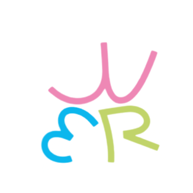
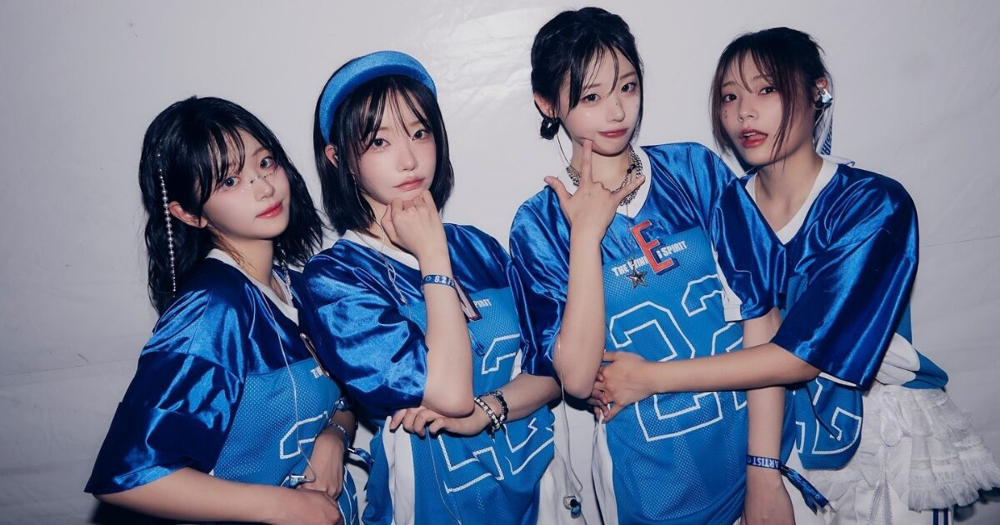

QWER is a four-member band named after the Q, W, E, and R keys on a keyboard—best known in League of Legends for activating champion abilities. Each member represents one of the four letters, forming the band name Q-W-E-R. Formed under 3Y Corporation and Tamago Production, they debuted on October 18, 2023 with their first single album Harmony from Discord. The name is pronounced individually as Q–W–E–R, not “kwer.”
The group originally gained fame as online creators before transitioning into music. Their blend of pop-rock energy, influencer culture, and strong digital presence helped them quickly build a dedicated fanbase.
QWER was formed in early 2023 through a collaboration between 3Y Corporation and Tamago Production, bringing together members who were already well-known online for their personalities, gaming backgrounds, and content creation.
The group officially debuted on October 18, 2023 with the single album Harmony from Discord, gaining attention for their concept that blends gaming culture with band aesthetics. Their debut showcased a pop-rock sound, quickly earning praise from both music and gaming communities.
Throughout 2024, QWER continued expanding their presence through live performances, collaborations, and consistent social media engagement. Their relatable personalities and energetic stage presence helped solidify their growing popularity.
As of today, QWER continues to develop their identity as a modern band bridging online culture and mainstream music, drawing fans from both the K-band and digital entertainment scenes.